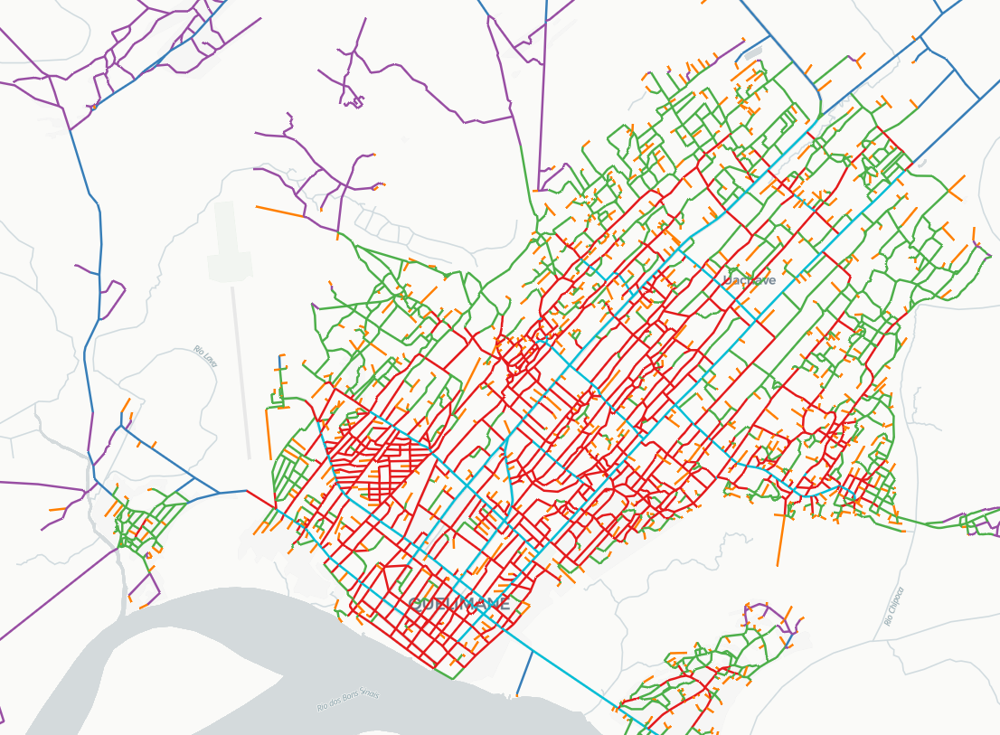

Quelimane's Spatial Typology Model
A collaboration with Studio Bednarski, this project was part of a larger research and design effort to understand the spatial structure of Quelimane, Mozambique, and its implications for urban development. The model highlights the aggregate potentials of the city, with respect to mobility, flood risk, future development and social equity, and provides a framework for informed decision-making in urban planning and design.
Explore model →